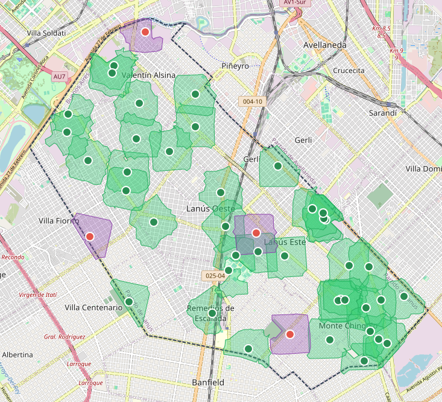

Especializada en el procesamiento de datos espaciales, teledetección y análisis territorial aplicados a la conservación de la biodiversidad, la gestión del espacio público y la evaluación de impacto ambiental.

Análisis de equidad ambiental urbana en Lanús mediante un visor espacial interactivo. Evaluación de acceso peatonal (isócronas de 10 min) para identificar áreas con déficit verde.